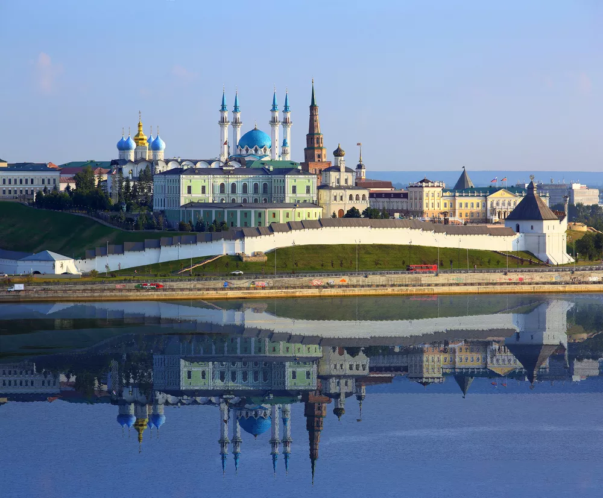

Город Казань
Казанский Кремль
Кремль — визитная карточка столицы Татарстана. Кстати, само слово «кремль» — татарского происхождения и в переводе на русский означает «укрепление». Для сравнения, Московский кремль младше Казанского на 200 лет. В кремле причудливо соединились татарский и русский стили архитектуры. Кремль строился с X по XVI века на берегу реки Казанки. В 1556-1562 годах псковские мастера возвели мощные стены из белого камня на месте старой татарской крепости, оставив лишь отдельные фрагменты её стен. В первой половине XVIII века прошла реконструкция крепости. В частности, была надстроена Спасская башня — туда были добавлены два яруса с часами и колоколами. Размеры кремля внушительны: его площадь составляет более 15 га, высота стен достигает 12 м, толщина каменных стен доходит до 6 м. До наших дней сохранилось 8 башен. На территории кремля расположено много достопримечательностей: захоронение крымских ханов XV века, падающая башня Сююмбике, Спасо-Преображенский монастырь, мечеть Кул Шариф, пушечный двор, резиденция президента Татарстана. Вход на территорию кремля бесплатный, в музеи нужно покупать отдельные билеты.
Башня Сююмбике
На территории кремля есть своя Пизанская башня — это башня Сююмбике. Она занимает третье место по углу наклона среди «падающих» башен мира: ее вершина отклонилась от вертикали на 2 м из-за разрушения фундамента. 58-метровая башня построена в начале XVII века на самой высокой точке кремлевского холма. По своему виду Сююмбике очень напоминает Боровицкую башню Московского Кремля. О башне ходит множество легенд. По одной из них, она названа в честь татарской царицы Сююмбике. Она согласилась выйти замуж за Ивана Грозного при условии, что за 7 дней будет построена самая высокая в городе башня. Русский царь выполнил условие, но перед свадебным пиром царица забралась на самый верх и, не желая уезжать из родного города, бросилась вниз. На самом же деле башня была построена гораздо позднее. Башня Сююмбике закрыта для туристов, но рядом с ней есть смотровая площадка, откуда открывается прекрасный вид на город, особенно на закате.
.webp)